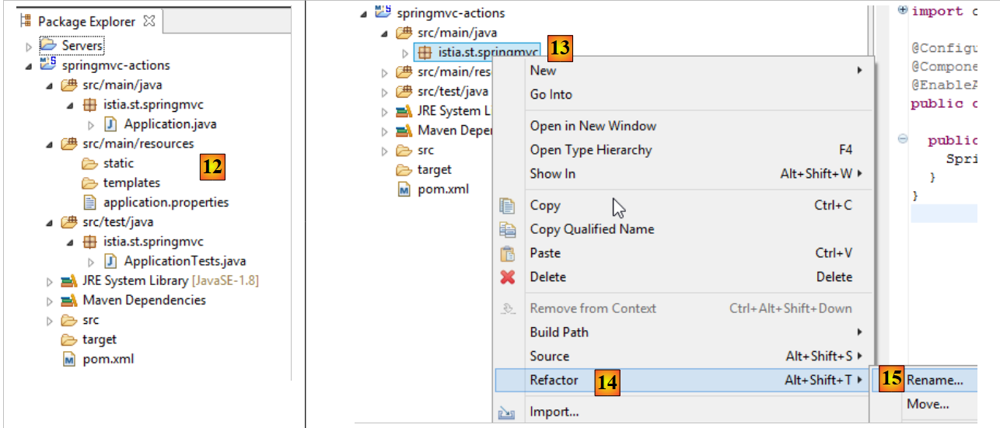
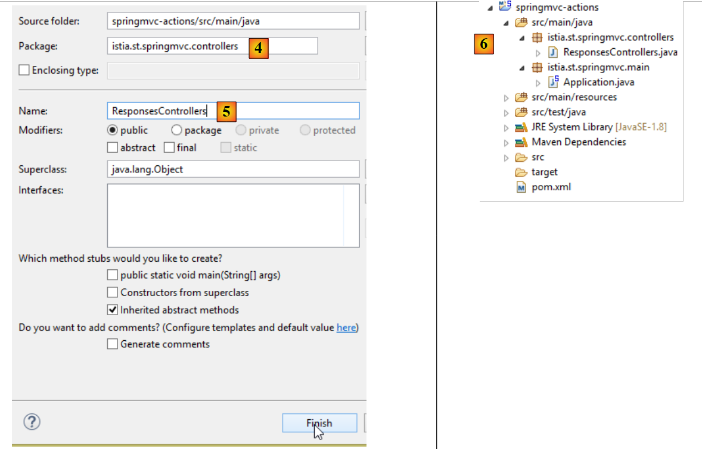
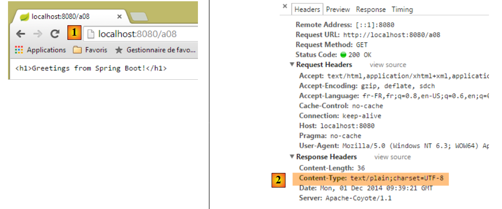

3. Actions: The Response
Let’s consider the architecture of a Spring MVC application:
 |
In this chapter, we examine the process that routes the request [1] to the controller and the action [2a] that will process it, a mechanism known as routing. We also present the various responses [3] that an action can return to the browser. This may be something other than a V view [4b].
3.1. The new project
We create a new Spring MVC project:
 |
- In [1-2], we create a new project based on Spring Boot;
 |
- in [3], the name of the Maven project;
- in [4], the Maven group where the project’s compilation output will be placed;
- in [5], the name given to the compilation output;
- in [6], a description of the project;
- in [7], the package where the project’s executable class will be placed;
- in [8], the nature of the project. This is a web project with Thymeleaf views. Here, we see all the ready-to-use Maven dependencies provided by the Spring Boot project;
- in [9], we specify that the output of the Maven build will be packaged in a JAR archive rather than a WAR. The project will then use an embedded Tomcat server, which will be included in its dependencies;
- in [10], we proceed to the next step of the wizard;
- in [11], specify the project directory;
 |
- in [12], the generated project;
- In [14-15], rename the package [istia.st.springmvc];
 |
- in [16], the new package name;
- in [17], the new project;
We now create a new class;
 |
- in [1-3], we create a new class;
 |
- in [5] we give it a name, and in [4] we specify its package;
- in [6] the new project;
The class is currently as follows:
package istia.st.springmvc;
public class ActionsController {
}
We are updating this code as follows:
package istia.st.springmvc;
import org.springframework.web.bind.annotation.RestController;
@RestController
public class ActionsController {
}
- Line 6: The [@RestController] annotation indicates two things:
- that the [ActionsController] class annotated in this way is a Spring MVC controller, and therefore contains actions that handle client URLs;
- that the result of these actions is sent to the client;
The other annotation [@Controller] we encountered is different: the actions of a controller annotated in this way return the name of the view that should be displayed. It is then the combination of this view and the model constructed by the action for this view that provides the response sent to the client.
The change in our project’s structure requires a change in our project’s configuration:
 |
The [Application] class evolves as follows:
package istia.st.springmvc.main;
import org.springframework.boot.SpringApplication;
import org.springframework.boot.autoconfigure.EnableAutoConfiguration;
import org.springframework.context.annotation.ComponentScan;
import org.springframework.context.annotation.Configuration;
@Configuration
@ComponentScan({"istia.st.springmvc.controllers"})
@EnableAutoConfiguration
public class Application {
public static void main(String[] args) {
SpringApplication.run(Application.class, args);
}
}
- Line 9: The [ComponentScan] annotation takes as a parameter an array of package names where Spring Boot should look for Spring components. Here, we include the package [istia.st.springmvc.controllers] in this array so that the controller annotated with [@RestController] can be found;
We will create various actions in the controller to illustrate their main features. First, we will focus on the various types of responses possible for an action in an application without views.
3.2. [/a01, /a02] - Hello world
Our first action will be as follows:
@RestController
public class ActionsController {
// ----------------------- hello world ------------------------
@RequestMapping(value = "/a01", method = RequestMethod.GET)
public String a01() {
return "Greetings from Spring Boot!";
}
}
- Line 4: The [RequestMapping] annotation specifies the request handled by the annotated action:
- the [value] attribute is the URL being processed,
- the [method] attribute specifies the accepted method;
Thus, the method [a01] handles the HTTP request [GET /a01].
- line 5: the [a01] method returns a [String] type, which will be sent as-is to the client;
- line 6: the returned string;
Let’s run the application as we have done several times before, then using the [Advanced Rest Client], we request the URL [/a01] with a GET [1-2]:
 |
- in [3], the server’s response;
- in [4], the HTTP headers of the response. We can see that the encoding used is [ISO-8859-1]. We might prefer UTF-8 encoding. This can be configured;
- in [5], we request the same URL using the Chrome browser;
We add the following action [/a02] to the [ActionsController] (we will sometimes confuse the URL with the method that handles it, referred to as the action):
// ----------------------- accented characters - UTF8 ------------------------
@RequestMapping(value = "/a02", method = RequestMethod.GET, produces="text/plain;charset=UTF-8")
public String a02() {
return "caractères accentués : éèàôûî";
}
- Line 2: The attribute [produces="text/plain;charset=UTF-8"] indicates that the action sends a text stream with characters encoded in [UTF-8] format. This format specifically allows the use of accented characters;
To apply this new action, we must restart the application:
 |
The result is as follows:
 |
- in [1], we see the type of document sent by the server;
- In [2-3], the accented characters are clearly visible;
3.3. [/a03]: Return an XML stream
We add the following [/a03] action:
// ----------------------- text/xml ------------------------
@RequestMapping(value = "/a03", method = RequestMethod.GET, produces = "text/xml;charset=UTF-8")
public String a03() {
String greeting = "<greetings><greeting>Greetings from Spring Boot!</greeting></greetings>";
return greeting;
}
- Line 2: The attribute [produces="text/xml;charset=UTF-8"] indicates that the action sends an XML stream with characters encoded in [UTF-8] format;
Its execution produces the following:
 |
- In [1], the HTTP header specifies that the sent document is HTML;
- in [2], the Chrome browser uses this information to format the received XML text;
Remember that with Chrome, you can view the HTTP exchanges between the client and the server in the developer console (Ctrl-Shift-I):

From now on, we will not systematically take screenshots of the HTTP exchanges between the client and the server. Sometimes, we will simply quote the text of these exchanges.
3.4. [/a04, /a05]: returning a JSON feed
We add the following [/a04] action:
// ----------------------- produce from jSON ------------------------
@RequestMapping(value = "/a04", method = RequestMethod.GET)
public Map<String, Object> a04() {
Map<String, Object> map = new HashMap<String, Object>();
map.put("1", "un");
map.put("2", new int[] { 4, 5 });
return map;
}
- Line 3: The action returns a [Map] type, a dictionary. Recall that with a [@RestController] controller, the result of the action is the response sent to the client. Since HTTP is a protocol for exchanging lines of text, the client’s response must be serialized into a string. To do this, Spring MVC uses various converters [Object <---> string]. The association of a specific object with a converter is done through configuration. Here, Spring Boot’s autoconfiguration will inspect the project’s dependencies:
 |
The Jackson dependencies listed above are libraries for serializing and deserializing objects into JSON strings. Spring Boot will then use these libraries to serialize and deserialize the objects returned by the actions. An example of Java code for serializing and deserializing Java objects into JSON can be found in Section 9.7.
Note on line 2 that we did not specify the type of the response being sent. We will see the default type that will be sent.
The results in Chrome are as follows [1-3]:
 |
Let’s now add the following action [/a05]:
// ----------------------- produce from jSON - 2 ------------------------
@RequestMapping(value = "/a05", method = RequestMethod.GET)
public Personne a05() {
return new Personne(1,"carole",45);
}
The [Person] class is as follows:
 |
package istia.st.sprinmvc.models;
public class Personne {
// identifier
private Integer id;
// name
private String nom;
// age
private int age;
// manufacturers
public Personne() {
}
public Personne(String nom, int age) {
this.nom = nom;
this.age = age;
}
public Personne(Integer id, String nom, int age) {
this(nom, age);
this.id = id;
}
@Override
public String toString() {
return String.format("[id=%s, nom=%s, age=%d]", id, nom, age);
}
// getters and setters
...
}
The execution yields the following results:
 |
- in [1], the server indicates that the document it is sending is JSON;
- in [2], the received JSON document;
3.5. [/a06]: return an empty stream
We add the following [/a06] action:
// ----------------------- render an empty stream ------------------------
@RequestMapping(value = "/a06")
public void a06() {
}
- On line 3, the [/a06] action returns nothing. Spring MVC will then generate an empty response to the client;
The execution yields the following results:
 |
Above, the HTTP [Content-Length] attribute in the response indicates that the server is sending an empty document.
3.6. [/a07, /a08, /a09]: data type with [Content-Type]
We add the following action [/a07]:
// ----------------------- text/html ------------------------
@RequestMapping(value = "/a07", method = RequestMethod.GET, produces = "text/html;charset=UTF-8")
public String a07() {
String greeting = "<h1>Greetings from Spring Boot!</h1>";
return greeting;
}
- Line 2: The [/a07] action returns an HTML stream [text/html];
- line 4: an HTML string;
The execution yields the following results:
 |
- in [1], we see that Chrome has interpreted the HTML tag <h1>, which displays its content in large font;
Now let’s do the same thing with the following [/a08] action:
// ----------------------- result HTML in text/plain ------------------------
@RequestMapping(value = "/a08", method = RequestMethod.GET, produces = "text/plain;charset=UTF-8")
public String a08() {
String greeting = "<h1>Greetings from Spring Boot!</h1>";
return greeting;
}
- Line 2: The action's response is of type [text/plain];
The results are as follows:
 |
- In [1], Chrome did not interpret the HTML tag <h1> because the server told it that it was sending a [text/plain] stream [2];
Let’s try something similar with the following [/a09] action:
// ----------------------- result HTML in text/xml ------------------------
@RequestMapping(value = "/a09", method = RequestMethod.GET, produces = "text/xml;charset=UTF-8")
public String a09() {
String greeting = "<h1>Greetings from Spring Boot!</h1>";
return greeting;
}
- Line 2: We send a [text/xml] stream;
The results are as follows:
 |
- In [1], Chrome did not interpret the HTML tag <h1> because the server told it that it was sending a [text/xml] stream [2]. It then treated the <h1> tag as an XML tag;
These examples highlight the importance of the [Content-Type] HTTP header in the server’s response. The browser uses this header to determine how to interpret the document it receives;
3.7. [/a10, /a11, /a12]: redirecting the client
We create a new controller [RedirectController]:
 |
The code for [RedirectController] will be as follows for now:
package istia.st.springmvc.controllers;
import org.springframework.stereotype.Controller;
import org.springframework.web.bind.annotation.RequestMapping;
import org.springframework.web.bind.annotation.RequestMethod;
@Controller
public class RedirectController {
}
- Line 7: We use the [@Controller] annotation, which means that by default, the [String] type of the action result now refers to the name of an action or a view;
We create the following [/a10] action:
// ------------ bridge to third-party action -----------------------
@RequestMapping(value = "/a10", method = RequestMethod.GET)
public String a10() {
return "a01";
}
- Line 4: We return 'a01' as the result, which is the name of an action. This action will then send the response to the client;
Here is an example:
 |
- In [2], we received the stream from action [/a01];
- in [3], the browser displays the URL of action [/a10];
We now create the following action [/a11]:
// ------------ temporary 302 redirect to a third-party action -----------------------
@RequestMapping(value = "/a11", method = RequestMethod.GET)
public String a11() {
return "redirect:/a01";
}
We get the following results:
 |
- In the Chrome logs [1-2], we see two requests, one to [/a11] and the other to [/a01];
- in [3], the server responds with a [302] status code, which instructs the client browser to redirect to the URL specified by the HTTP [Location:] header [4]. The [302] status code is a temporary redirect code;
The browser then makes the second request to the redirect URL:
 |
- in [5], the client’s second request;
- in [6], the client browser displays the redirect request URL;
You may want to indicate a permanent redirect, in which case you must send the following HTTP header to the client:
which means that the redirect is permanent. This difference between a temporary redirect (302) and a permanent redirect (301) is taken into account by some search engines.
We write the action [/a12] that will perform this permanent redirect:
// ------------ permanent 301 redirect to a third-party action----------------
@RequestMapping(value = "/a12", method = RequestMethod.GET)
public void a12(HttpServletResponse response) {
response.setStatus(301);
response.addHeader("Location", "/a01");
}
- Line 3: We ask Spring MVC to inject the [HttpServletResponse] object, which encapsulates the response sent to the client;
- line 4: we set the [status] of the response, the [301] HTTP header:
- line 5: we manually create the following HTTP header:
which is the redirect URL.
Execution yields the following results:
 |  |
From this example, we will learn how to:
- generate the HTTP response status;
- include an HTTP header in the response;
3.8. [/a13]: generate the complete response
It is possible to fully control the response, as shown by the following action in the [ResponsesController] class:
 |
// ----------------------- complete response generation ------------------------
@RequestMapping(value = "/a13")
public void a13(HttpServletResponse response) throws IOException {
response.setStatus(666);
response.addHeader("header1", "qq chose");
response.addHeader("Content-Type", "text/html;charset=UTF-8");
String greeting = "<h1>Greetings from Spring Boot!</h1>";
response.getWriter().write(greeting);
}
- Line 3: The result of the action is [void]. In this case, to send a non-empty response to the client, you must use the [HttpServletResponse response] object provided by Spring MVC;
- line 4: we assign a status to the response that will not be recognized by the client;
- line 5: we add an HTTP header that will not be recognized by the client;
- line 6: we add an HTTP header [Content-Type] to specify the type of data we are sending, in this case HTML;
- Lines 7–8: The document that follows the HTTP headers in the response;
The results are as follows:
 |
- in [1], we recognize the elements of our response;
- in [2-3], we see that Chrome ignored the fact that:
- the HTTP status of the response was not a recognized HTTP status,
- that the header [header1] was not a recognized HTTP header;
If the client is not a browser but a programmatic client, you are free to use whatever status codes and headers you want.